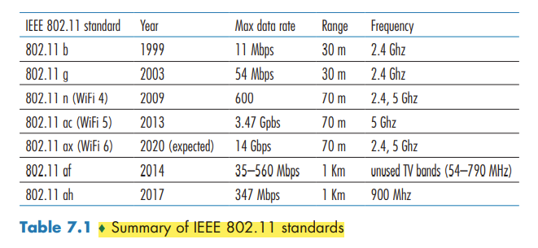
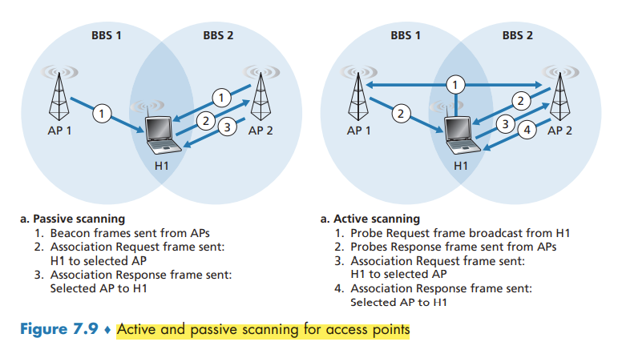
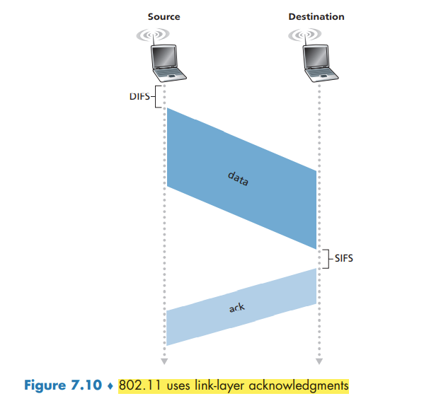
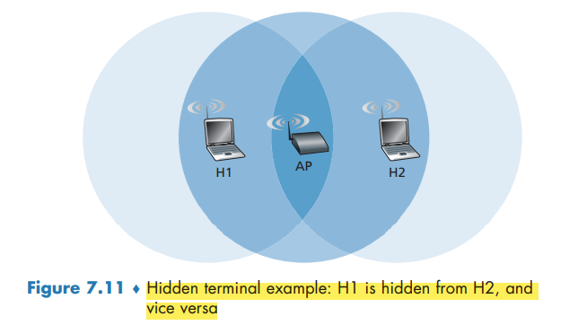
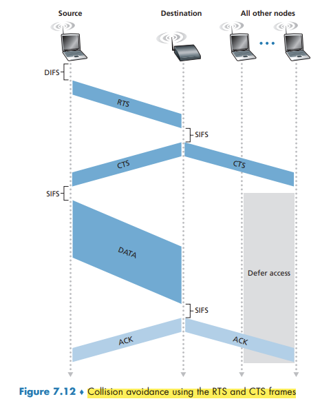
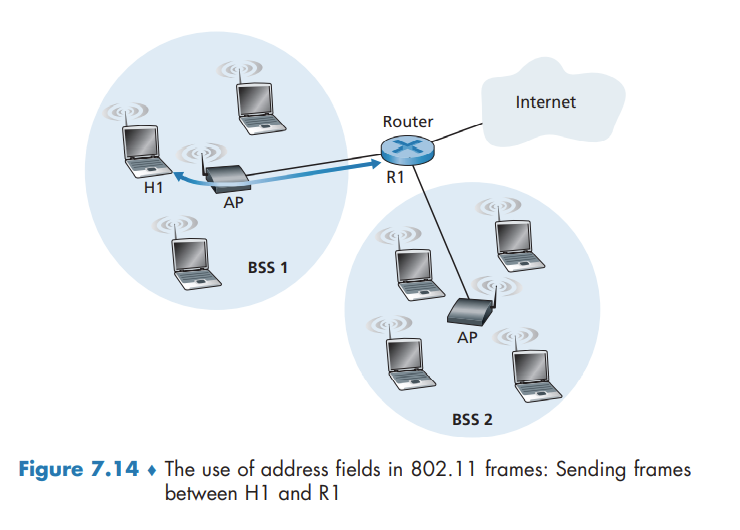
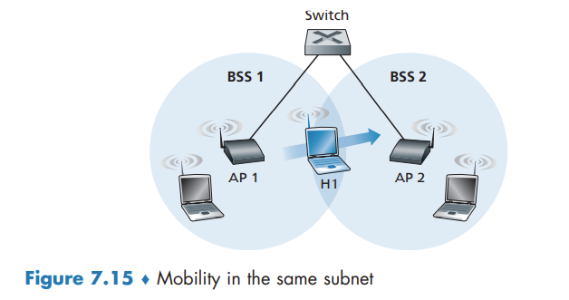

↩️ ttm4100
WiFi: 802.11 Wireless LANs
Although many technologies and standards for wireless LANs were developed in the 1990s, one particular class of standards has clearly emerged as the winner: the IEEE 802.11 wireless LAN, also known as WiFi.
The different 802.11 b, g, n, ac, ax standards all share some common characteristics, including the 802.11 frame format that we will study shortly, and are backward compatible,
They also all use the same medium access protocol, CSMA/CA

The 802.11 Wireless LAN Architecture
The fundamental building block of the 802.11 architecture is the basic service set (BSS). A BSS contains one or more wireless stations and a central base station, known as an access point (AP).
In a typical home network, there is one AP and one router (typically integrated together as one unit) that connects the BSS to the Internet.
As with Ethernet devices, each 802.11 wireless station has a 6-byte MAC address.
IEEE 802.11 stations can also group themselves together to form an ad hoc network.
Channels and Association
In 802.11, each wireless station needs to associate with an AP before it can send or receive network-layer data. the administrator assigns a one or two-word Service Set Identifier (SSID) to the access point.
recall that 802.11 operates in the frequency range of 2.4 GHz to 2.4835 GHz. Within this 85 MHz band, 802.11 defines 11 partially overlapping channels. Any two channels are non-overlapping if and only if they are separated by four or more channels.
A WiFi jungle is any physical location where a wireless station receives a sufficiently strong signal from two or more APs. To gain Internet access, your wireless device needs to join exactly one of the subnets and hence needs to associate with exactly one of the APs.
The 802.11 standard requires that an AP periodically send beacon frames, each of which includes the AP’s SSID and MAC address.
The process of scanning channels and listening for beacon frames is known as passive scanning. A wireless device can also perform active scanning, by broadcasting a probe frame that will be received by all APs within the wireless device’s range

After selecting the AP with which to associate, the wireless device sends an association request frame to the AP, and the AP responds with an association response frame.
Once associated with an AP, the device will want to join the subnet. Thus, the device will typically send a DHCP discovery message into the subnet via the AP in order to obtain an IP address on the subnet.
In order to create an association with a particular AP, the wireless device may be required to authenticate itself. One approach, used by many companies, is to permit access to a wireless network based on a device’s MAC address. A second approach, used by many Internet cafés, employs usernames and passwords.
The 802.11 MAC Protocol
because multiple wireless devices, or the AP itself may want to transmit data frames at the same time over the same channel, a multiple access protocol is needed to coordinate the transmissions.
Inspired by the huge success of Ethernet and its random access protocol, the designers of 802.11 chose a random access protocol for 802.11 wireless LANs. This random access protocol is referred to as CSMA with collision avoidance, or more succinctly as CSMA/CA. As with Ethernet’s CSMA/CD, the “CSMA” in CSMA/CA stands for “carrier sense multiple access,”
First, instead of using collision detection, 802.11 uses collision-avoidance techniques. Second, because of the relatively high bit error rates of wireless channels, 802.11 (unlike Ethernet) uses a link-layer acknowledgment/retransmission (ARQ) scheme.
the 802.11 MAC protocol does not implement collision detection. There are two important reasons for this:
- The ability to detect collisions requires the ability to send (the station’s own signal) and receive (to determine whether another station is also transmitting) at the same time.
- the hidden terminal problem and fading
once a station begins to transmit a frame, it transmits the frame in its entirety;
802.11 MAC protocol uses link-layer acknowledgments. when the destination station receives a frame that passes the CRC, it waits a short period of time known as the Short Inter-frame Spacing (SIFS) and then sends back an acknowledgment frame. If the transmitting station does not receive an acknowledgment within a given amount of time, it assumes that an error has occurred and retransmits the frame, using the CSMA/CA protocol to access the channel.

The 802.11 CSMA/CA protocol:
- If initially the station senses the channel idle, it transmits its frame after a short period of time known as the Distributed Inter-frame Space (DIFS);
- Otherwise, the station chooses a random backoff value using binary exponential backoff. While the channel is sensed busy, the counter value remains frozen.
- When the counter reaches zero the station transmits the entire frame and then waits for an acknowledgment.
- If an acknowledgment is received, the transmitting station knows that its frame has been correctly received at the destination station. If the station has another frame to send, it begins the CSMA/CA protocol at step 2. If the acknowledgment isn’t received, the transmitting station reenters the backoff phase in step 2, with the random value chosen from a larger interval.
Because 802.11 does not detect a collision and abort transmission, a frame suffering a collision will be transmitted in its entirety. The goal in 802.11 is thus to avoid collisions whenever possible. In 802.11, if the two stations sense the channel busy, they both immediately enter random backoff, hopefully choosing different backoff values.
Dealing with Hidden Terminals: RTS and CTS
In order to avoid this problem, the IEEE 802.11 protocol allows a station to use a short Request to Send (RTS) control frame and a short Clear to Send (CTS) control frame to reserve access to the channel.
CTS frame serves two purposes: It gives the sender explicit permission to send and also instructs the other stations not to send for the reserved duration.
The use of the RTS and CTS frames can improve performance in two important ways:
- The hidden station problem is mitigated
- a collision involving an RTS or CTS frame will last only for the duration of the short RTS or CTS frame.


Although the RTS/CTS exchange can help reduce collisions, it also introduces delay and consumes channel resources. For this reason, the RTS/CTS exchange is only used (if at all) to reserve the channel for the transmission of a long DATA frame. In practice, each wireless station can set an RTS threshold such that the RTS/ CTS sequence is used only when the frame is longer than the threshold.
Using 802.11 as a Point-to-Point Link
if two nodes each have a directional antenna, they can point their directional antennas at each other and run the 802.11 protocol over what is essentially a point-to-point link.
The IEEE 802.11 Frame
Payload and CRC Fields
The payload is permitted to be as long as 2,312 bytes, it is typically fewer than 1,500 bytes, holding an IP datagram or an ARP packet.

The type and subtype fields are used to distinguish the association, RTS, CTS, ACK, and data frames. The to and from fields are used to define the meanings of the different address fields.
Address Fields
Perhaps the most striking difference in the 802.11 frame is that it has four address fields, each of which can hold a 6-byte MAC address. The fourth address field is used when APs forward frames to each other in ad hoc mode.
- Address 2 is the MAC address of the station that transmits the frame.
- Address 1 is the MAC address of the wireless station that is to receive the frame.
- the BSS is part of a subnet, and that this subnet connects to other subnets via some router interface. Address 3 contains the MAC address of this router interface.

Note that the AP and Router may be separate devices.
an AP is a link-layer device, and thus neither “speaks” IP nor understands IP addresses. The router is not aware that there is an AP between it and H1; from the router’s perspective, H1 is just a host in one of the subnets to which it (the router) is connected.
Sequence Number, Duration, and Frame Control Fields
In 802.11, whenever a station correctly receives a frame from another station, it sends back an acknowledgment. the use of sequence numbers allows the receiver to distinguish between a newly transmitted frame and the retransmission of a previous frame. The sequence number field in the 802.11 frame thus serves exactly the same purpose here at the link layer as it did in the transport layer
Mobility in the Same IP Subnet
In order to increase the physical range of a wireless LAN, companies and universities will often deploy multiple BSSs within the same IP subnet.

Because in this example the interconnection device that connects the two BSSs is not a router, all of the stations in the two BSSs, including the APs, belong to the same IP subnet. Thus, when H1 moves from BSS1 to BSS2, it may keep its IP address and all of its ongoing TCP connections.
switches are “self-learning” and automatically build their forwarding tables. This self-learning feature nicely handles occasional moves. however, switches were not designed to support highly mobile users who want to maintain TCP connections while moving between BSSs. One solution is for AP2 to send a broadcast Ethernet frame with H1’s source address to the switch just after the new association. When the switch receives the frame, it updates its forwarding table, allowing H1 to be reached via AP2.
Advanced Features in 802.11
802.11 Rate Adaptation
some 802.11 implementations have a rate adaptation capability that adaptively selects the underlying physical-layer modulation technique to use based on current or recent channel characteristics. If a node sends two frames in a row without receiving an acknowledgment (an implicit indication of bit errors on the channel), the transmission rate falls back to the next lower rate.
This rate adaptation mechanism shares the same “probing” philosophy as TCP’s congestion-control mechanism—when conditions are good (reflected by ACK receipts), the transmission rate is increased until something “bad” happens (the lack of ACK receipts); when something “bad” happens, the transmission rate is reduced.
Power Management
The 802.11 standard provides power-management capabilities that allow 802.11 nodes to minimize the amount of time that their sense, transmit, and receive functions and other circuitry need to be “on.”
A node is able to explicitly alternate between sleep and wake states. A node indicates to the access point that it will be going to sleep by setting the power-management bit in the header of an 802.11 frame to 1. A node will wake up just before the AP sends a beacon frame, and quickly enter the fully active state.
A node that has no frames to send or receive can be asleep 99% of the time, resulting in a significant energy savings.